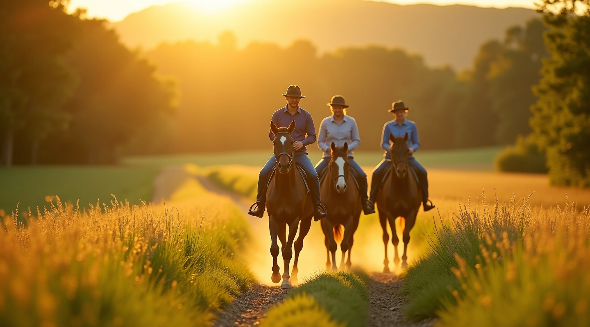
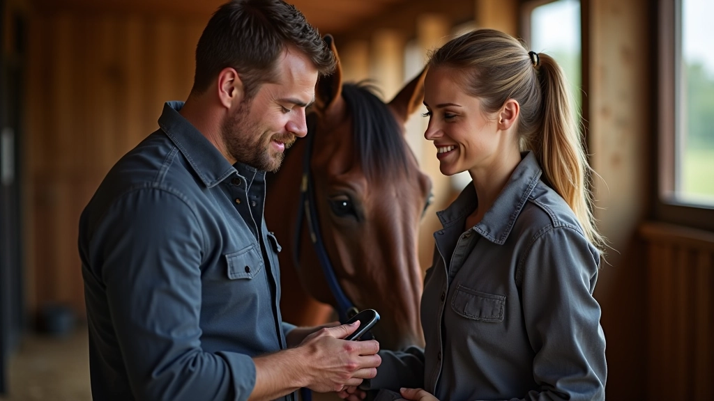
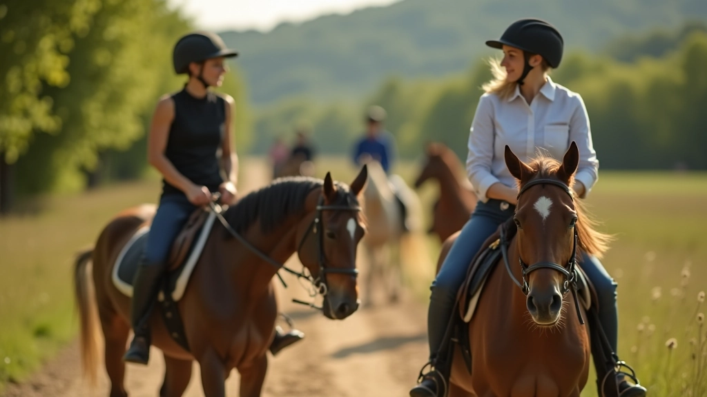

قصة طريق الخيل للفروسية شركة
نحن نعتقد أن ركوب الخيل عبر المسارات الطبيعية ليس مجرد رياضة — إنها طريقة للاتصال بالطبيعة والحصان والنفس. منذ عام 2019، نوفر تجارب ركوب حقيقية في مزارع الفيوم مصممة لجميع المستويات.

كيف بدأ كل شيء
ما بدأ كفكرة بسيطة أصبح حركة حقيقية لإعادة تعريف ركوب الخيل في مصر.
نشأنا من إحساس بالفراغ. رأينا الكثير من الناس يبحثون عن طريقة حقيقية لتعلم ركوب الخيل — لا التدوير في الحلبات الضيقة، بل الركوب الفعلي على المسارات الطبيعية. طريق الخيل للفروسية شركة ولدت من هذا الفهم البسيط لكن القوي.
في البداية، كان لدينا فريق صغير وشغف كبير. التقينا مع الفرسان المحليين، استكشفنا أفضل المسارات في الفيوم، وطورنا منهجية تعليمية تركز على السلامة والمتعة معاً. لم نكن نريد فقط تعليم الناس كيفية الجلوس على الحصان — كنا نريد تعليمهم كيفية التواصل مع حصانهم بحقيقة.
اليوم، نحن فخورون بالتجارب الفريدة التي نقدمها لراكبي الخيل لاكتشاف شغفهم. كل مسار، كل درس، كل لحظة تذكرنا لماذا نفعل هذا. طريق الخيل للفروسية شركة ليست مجرد خدمة — إنها حركة نحو ركوب خيل أكثر صدقاً وأصالة.

ما نتخصص فيه
طريق الخيل للفروسية شركة تركز على ستة مجالات أساسية لضمان تجربة شاملة وآمنة.
تحضير الحصان
نعلمك كيفية اختيار الحصان المناسب لك وتحضيره للمسارات الطويلة. الصحة والسلامة أولاً.
اختيار المسارات
نساعدك في فهم أنواع المسارات المختلفة واختيار ما يناسب مستواك وخبرتك الحالية.
معدات الأمان
معلومات مفصلة عن كل معدة أمان ضرورية وكيفية استخدامها بشكل صحيح في الميدان.
الركوب الجماعي
آداب التعامل مع الفرسان الآخرين والمشي الآمن للمجموعة في الطرق الطبيعية.
المعرفة العملية
نصائح عملية حول الراحة والطعام والماء والعناية اليومية قبل وأثناء وبعد الركوب.
الاتصال بالطبيعة
فهم البيئة الطبيعية والحياة البرية والعوامل المناخية التي تؤثر على تجربة الركوب.
كيف نعمل
منهجنا يعتمد على الخطوات الواضحة والتطبيق العملي المباشر.
التقييم الأولي
نبدأ بفهم خلفيتك وخبرتك وأهدافك من الركوب. هل أنت مبتدئ تماماً؟ أم لديك خبرة سابقة؟ لا توجد إجابة خاطئة — نريد أن نفهم أين أنت الآن.
البحث المتخصص
نقدم لك معلومات مفصلة حول موضوعك المحدد — سواء كان اختيار حصان، أو معدات أمان، أو تقنيات ركوب معينة. كل شيء واضح وعملي.
التطبيق الفعلي
المعرفة وحدها ليست كافية. نساعدك على تطبيق ما تعلمته في مسارات حقيقية مع دعم وإرشاد من ذوي الخبرة.
التطور المستمر
لا ننتهي بعد الدرس الأول. نتابع معك، نستمع إلى تجاربك، ونساعدك على التطور بشكل آمن ومستدام.

ما يحرك طريق الخيل
هذه المبادئ توجه كل قرار نتخذه وكل محتوى نقدمه.
الأمان أولاً، دائماً
لا نساوم على السلامة. كل المعلومات التي نقدمها تركز على حماية الفارس والحصان معاً. الركوب الآمن هو الركوب الممتع.
الصدق والوضوح
نحن لا نبالغ في القدرات أو نعد بنتائج سحرية. نخبرك بالحقائق — ما يعمل، وما لا يعمل، وما يتطلب صبراً وممارسة.
احترام الحصان
الحصان شريك، ليس أداة. كل نصيحة نقدمها تأخذ في الاعتبار رفاهية الحصان وكرامته.
التعلم المستمر
لا أحد يعرف كل شيء. نحن نستمر في التعلم من خبرتنا وخبرة الفرسان الآخرين، وننقل هذا التطور إلى مجتمعنا.
ملاحظة مهمة
المعلومات المقدمة على هذا الموقع مخصصة لأغراض تعليمية وإعلامية فقط. ركوب الخيل يتضمن مخاطر جسدية، وتختلف نتائج التدريب من شخص لآخر حسب الخبرة السابقة والقدرات البدنية والالتزام. نشجع جميع الفرسان على البدء تحت إشراف مدربين مؤهلين وارتداء معدات الأمان المناسبة. يجب استشارة متخصصي الرعاية البيطرية بشأن صحة وسلامة الحصان. نحن لا نتحمل مسؤولية أي إصابات أو حوادث قد تحدث أثناء الركوب.